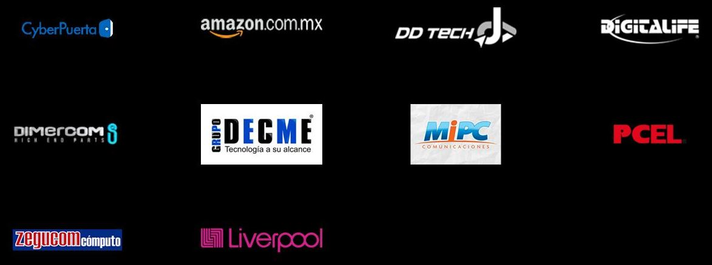
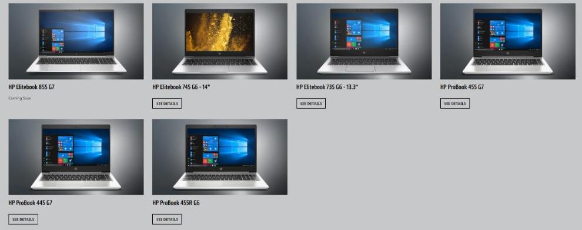
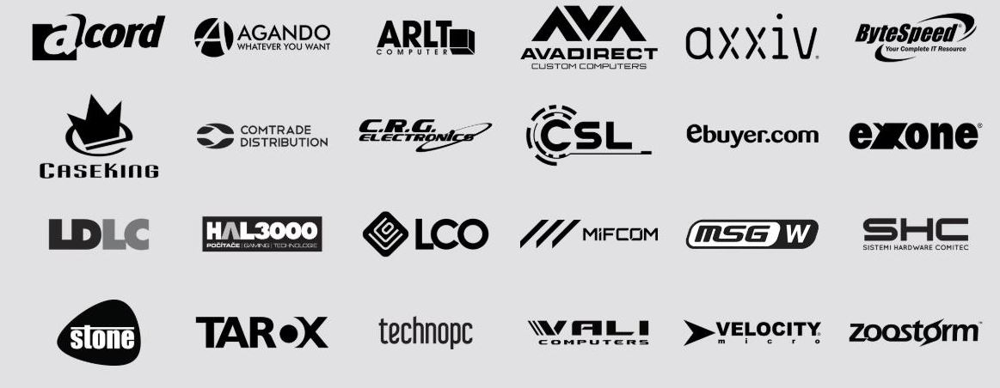
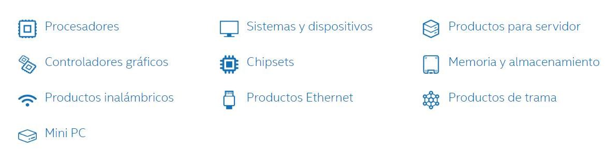
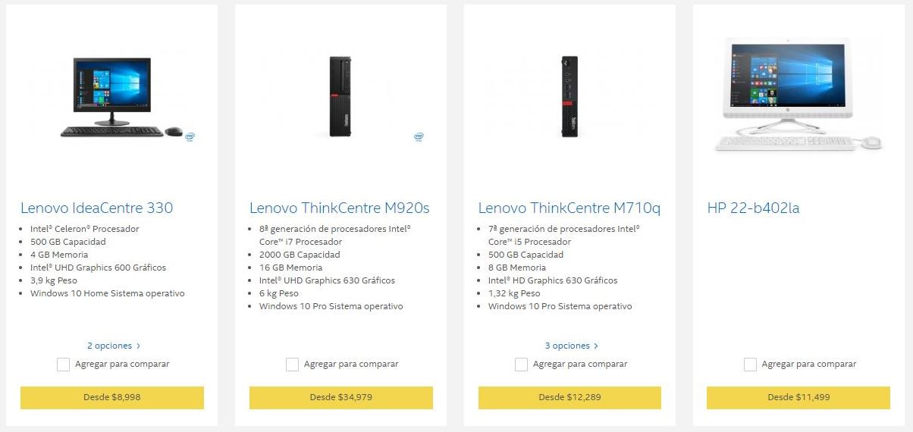
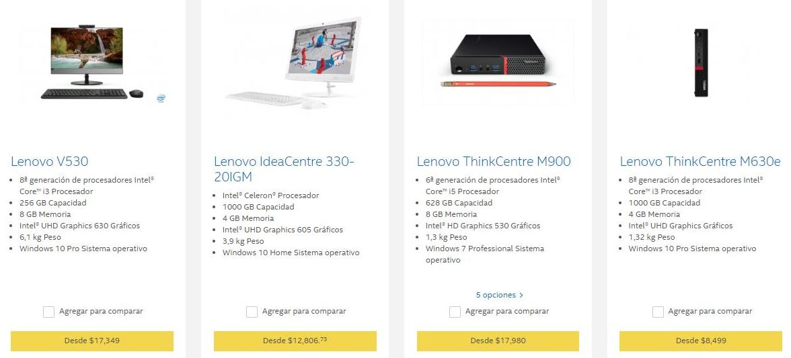
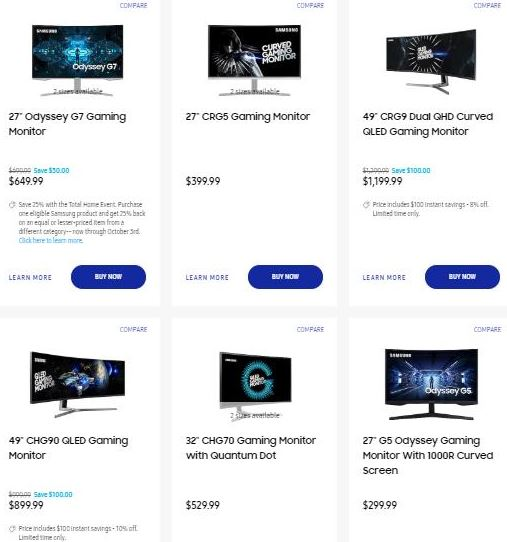
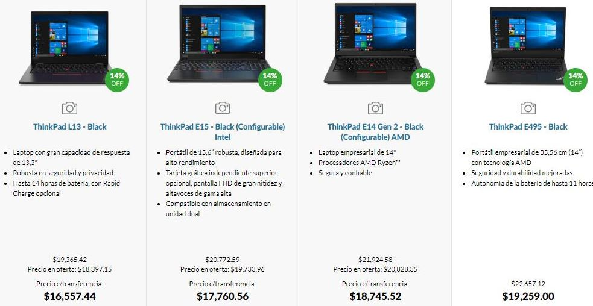

Es una empresa multinacional especializada en el desarrollo de unidades de procesamiento gráfico y tecnologías de circuitos integrados para estaciones de trabajo, ordenadores personales y dispositivos móviles.
Solo la plataforma RTX de NVIDIA incluye Núcleos RT dedicados para el ray tracing y Núcleos Tensor para la IA, que permiten tecnologías revolucionarias a velocidades increíbles. Disfruta de los juegos más importantes de la actualidad como nunca. RTX. It's On.
PROVEEDORES:

Advanced Micro Devices, Inc:
Es una compañía estadounidense de semiconductores con sede en Santa Clara, California, que desarrolla procesadores de computación y productos tecnológicos similares de consumo.


Sus productos principales incluyen microprocesadores, chipsets para placas base, circuitos integrados auxiliares, procesadores embebidos y procesadores gráficos para servidores, estaciones de trabajo, computadores personales y aplicaciones para sistemas embebidos.
PROVEEDORES:

Intel Corporation

Es el mayor fabricante de circuitos integrados del mundo según su cifra de negocio anual.



SAMSUNG

Samsung es un conglomerado de empresas multinacionales con sede en Seúl, Corea del Sur. Se trata del mayor grupo empresarial surcoreano, con numerosas filiales que abarcan negocios como la electrónica de consumo, tecnología, finanzas, aseguradoras, construcción, biotecnología y sector servicios.
Toshiba
Es una compañía japonesa, con sede en Tokio, dedicada a la manufactura de aparatos eléctricos y electrónicos. Ocupa el séptimo puesto en la lista de grandes compañías mundiales de su campo.

DA CLICK AQUI PARA CONTACTARNOS.